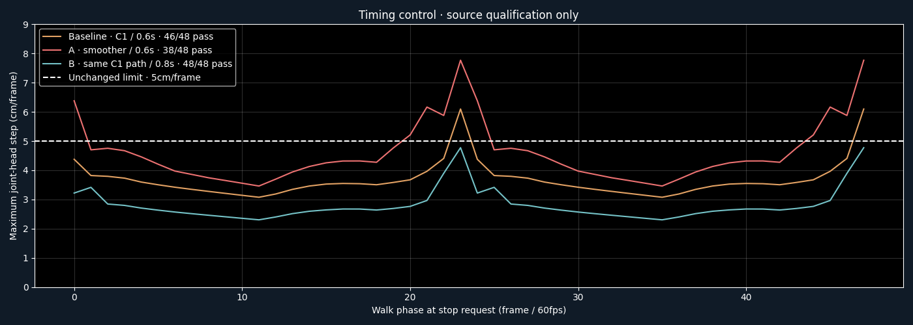

Selected B: all48 source phases pass. Representation and visual playback are not yet qualified. Godot shipping target; Pixi harness. The smoother0.6-second candidate raises peak joint motion and fails. Keeping the original normalized path but using0.8seconds reduces the worst step to4.774cm, below the unchanged5cm limit.

624 matched normalized-time samples confirm that candidateB preserves the baseline foot, hip and hand paths within1e-5m. All source contact, bone, book, hip and endpoint bars pass. This is the fastest passing candidate among the tested options; it is not a production combat-response decision.
The selected export stopped when the normal-correction stream exceeded its35MB component guard. Eight independently evaluated oracle buffers were saved before the stop, but the complete palette/normal manifest was not produced. No raster comparisons or motion videos were started, and the guard was not raised after failure.
Both source candidates and the partial export remain intact. The next separately bounded test will pack the exact correction bytes losslessly, verify decoded hashes and consumer behavior, then complete representative rendering. Geometry, paintings, motion and visual thresholds remain fixed. Complete arbitrary-phase runtime stop/start, combat timing and full pilot acceptance are still open.
Report · Receipt and limits · CandidateA failures · CandidateB source pass · Normalized-path control · Preserved export guard failure · Earlier source failures